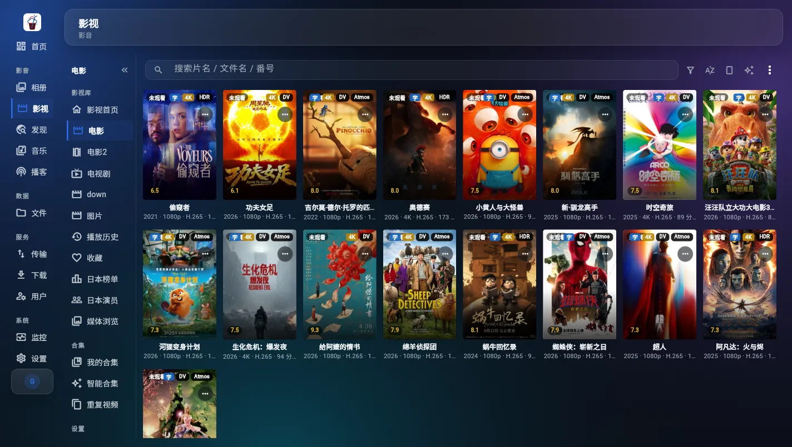
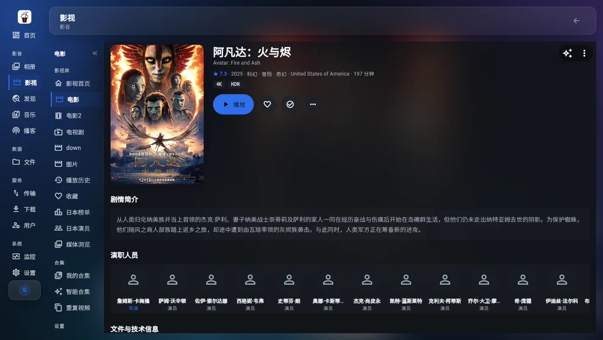
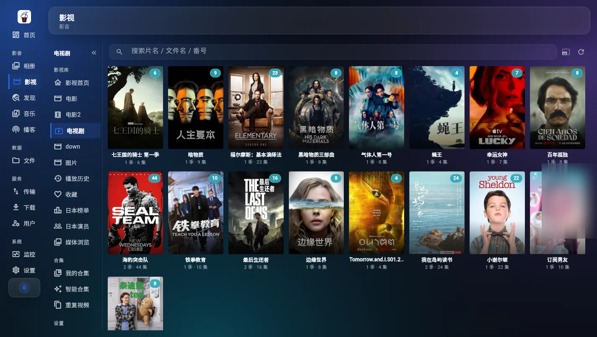
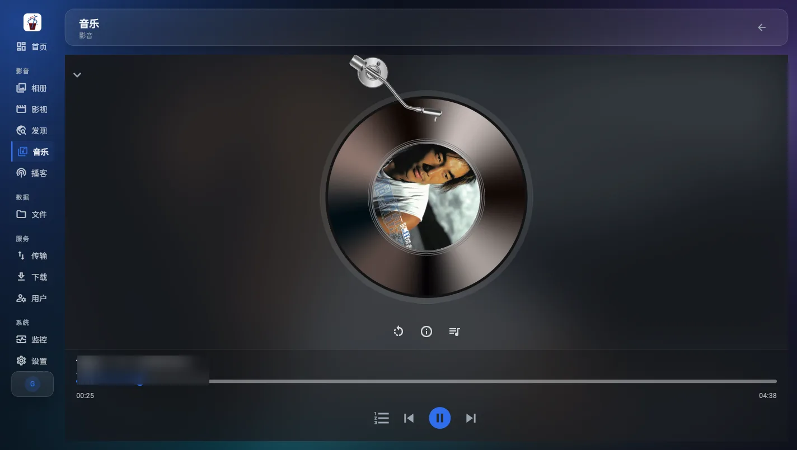
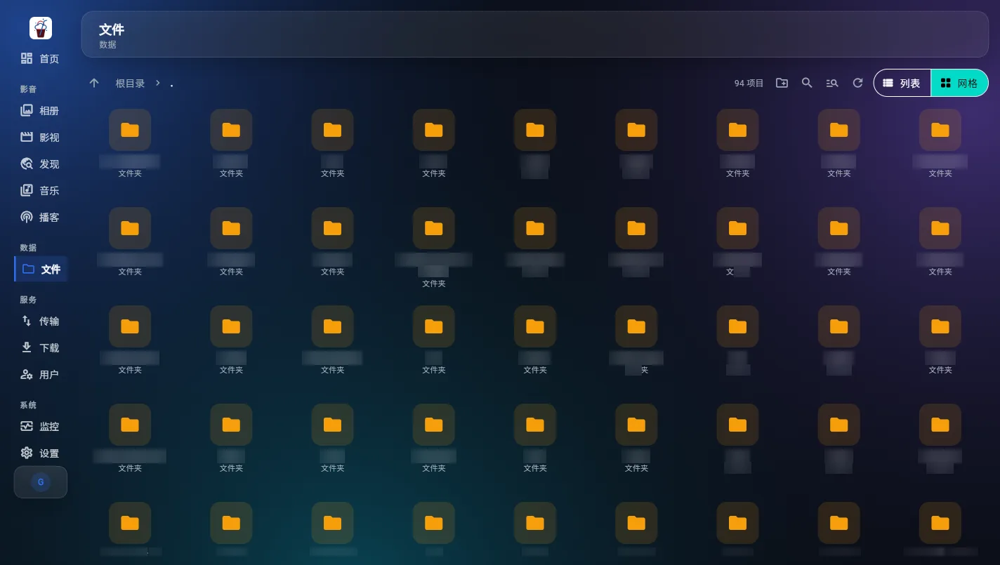
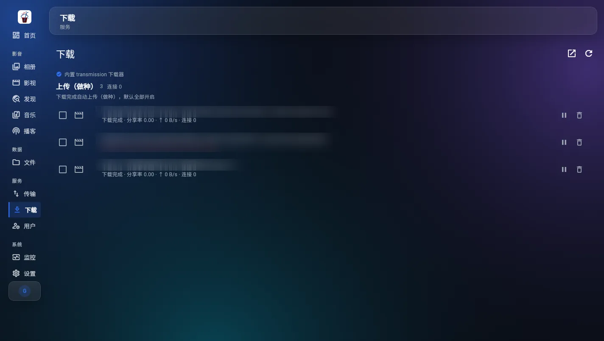
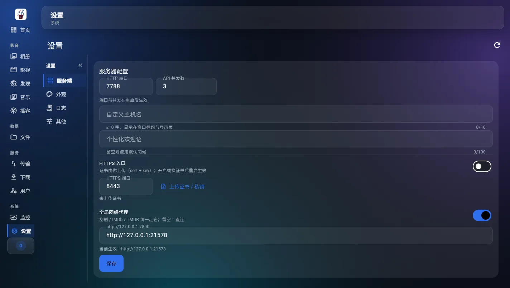

一台常开的 Windows 电脑，
就是整套私有云
ColaNasOs 是一款 WindowsNas 系统：不用买专用 NAS，不用装 Linux 或 Docker，也不用把照片交给网盘。装好服务端，这台机器就在局域网里提供相册、影视、音乐、文件、下载、同步与本地 AI。
机一台主机就够
支持 Windows 10 1809+ 与 Windows 11（x64）。安装后常驻系统托盘，勾选开机自启就会跟随登录启动，不需要长期开着远程桌面。
盘数据留在本机
文件存在你的磁盘，索引存在本机 SQLite；AI 模型在本机推理。不上传图片、视频与文本到任何公有云服务。
端一个服务端，六端共用
桌面、手机/平板、Android TV、Apple TV、网页与鸿蒙共用同一份导航契约；账号、权限、收藏与播放记录全部互通。
装装完就能用
安装包内置 Electron 运行时、FFmpeg 与视觉模型，不需要你另配 Python、Node 或数据库；首次打开只需创建管理员账号。
六块能力，一台机器全包
下面每一组都写清楚「实际能做什么」。截图来自正在运行的开发版应用，私人信息已做模糊处理；相册与日本影片相关页面只用版面示意图。
照片不出家门，
也能被找回来
不是按日期排一遍就完事：本地推理认得出人脸、场景、活动与票面文字，再用语义搜索、足迹地图和记忆把它们重新串起来。每个账号只看自己名下的照片。
- 浏览时间轴按月分组、滚到底增量加载；足迹地图、收藏、文件夹与自定义相册。
- 找人人脸检测 + 106 点对齐 + EdgeFace 512 维特征聚类，自动归组人物并梳理关系。
- 找内容365 类场景、CLIP 语义搜索、PP-OCR 文字与票面识别、活动识别。
- 回看记忆、每日一帧、年度报告、时光对照、旅程与票根。
- 维护相似清理、回收站、备份，以及单独的相册 AI 设置。
建库、刮削、播放、转码，
一条链跑完
电影、电视剧、图片与混合库各自独立，每个库可以挂多个来源目录。文件监控把新文件增量入库并触发刮削，海报墙自己长出来；手机、电视、桌面各播各的，服务端只负责把对的码流送到对的端。
- 建库四类库、多来源目录，本地盘与 SMB（UNC）都能进；远程根用轮询同步变化。
- 刮削TMDB / 豆瓣取元数据与评分，NFO 双向读写，手改字段优先，海报本地缓存。
- 找片发现页榜单、PT 搜索择种、RSS 订阅自动下载；日本榜单与日本演员单独入口。
- 播放HLS fMP4 切片、断点续转，编码不兼容自动回退 H.264 续播，安卓端另有 FFmpeg 软解兜底。
- 整理季集识别、演员作品、媒体浏览、自定义合集与重复视频查重。



曲库是本地文件，
播放器是认真做的
指向一个音乐目录就建好曲库，标签读不全时用文件名兜底；歌词优先读同名 LRC，缺了再在线刮削。全屏播放器带唱片动效与动态歌词，切到别的页面也不会中断。
- 结构歌曲、专辑、歌手、歌单、收藏、播放历史与文件夹七层入口。
- 标签封面优先读内嵌图，没有就用目录里的图片；繁简与跳字歌词都能命中同一首。
- 播放播放队列、后台播放、收藏与历史各成一路；音乐来源与缓存可在设置里改。

浏览的就是磁盘上
真实存在的目录
不做虚拟盘符抽象。文件应用管浏览、上传下载、回收站与日志；下载应用内置 transmission，也能接你已有的 RPC。下载完成的文件由文件监控接到，增量入库后自动进入影视库。
- 浏览网格 / 列表视图、面包屑、搜索与排序，支持多选与批量操作。
- 传输大文件分片上传、断点续传；下载支持 Range 与 ETag，拖进度条不会整段重下。
- 安全删除先进回收站，操作日志按时间倒读分页；路径级权限在服务端拦截越界访问。
- 下载随包带 transmission-daemon 与中文 Web UI，也可连已有 Transmission RPC；退出前先发 stopped 公告。


真实界面：内置下载器的任务列表；三个任务名称已模糊。
按文件夹建计划，
让几台设备保持一致
同步任务由桌面客户端执行，服务端负责三向比对（上行 / 下行 / 删除 / 冲突）与调度。可以建多个计划，按分钟间隔自动跑，也可以随时「立即同步」。
- 方向双向、仅上传、仅下载三种模式，先用「仅上传」试跑最稳。
- 过滤可按小文件、大文件、隐藏文件与扩展名排除，避免把缓存目录一起搬。
- 设备同一台机器只算一个设备；独立同步端与主客户端共用同一份任务。
- 边界浏览器不能读写本机任意目录，所以网页端不执行同步；冲突策略、删除传播与按需实时监听目前是占位项，尚未启用。
本地文件夹
三向比对与调度
只传差异部分
模型跑在本机，
图片不出局域网
相册的识别与检索、博客的短文本翻译与语音朗读，全部由 ONNX Runtime 与 llama.cpp 在本机推理。没有账号体系外的调用，也没有「上传后排队处理」。
- 视觉人脸检测与对齐、512 维人脸特征、365 类场景、CLIP 图文对齐、PP-OCR 文字识别、活动识别。
- 文本与语音Qwen3-1.7B 短文本翻译、Qwen3-TTS 语音合成，配合内置参考音色。
- 分发视觉模型随安装包；翻译与 TTS 权重约 1.4 GB，在应用内按需下载。
- 降级默认 CPU 推理；支持 DirectML 的 GPU 可以加速。没有 GPU 也能用，只是慢一些。
同一份服务端，
六种终端各有分工
客户端由同一份 Flutter 代码与同一份导航契约驱动（Apple TV 另有原生壳，鸿蒙保留独立工程骨架）。账号、权限、收藏与播放进度全部互通；服务端只有 Windows 一个版本。
| 端 | 形态 / 产物 | 状态 | 说明 |
|---|---|---|---|
| Windows 服务端 | ColaNasOs-Setup-1.1.0.exe |
已发布 | Windows 10 / 11 x64，托盘常驻；内置内核、FFmpeg 与视觉模型。 |
| Windows 桌面端 | ColaNasOs-1.1.0-windows-x64.zip |
已发布 | 解压即用。功能最全，也是目录同步的执行端。 |
| Android 手机 / 平板 | ColaNasOs-1.1.0-arm64.apk |
已发布 | 手机与平板共用一个包，平板走大屏布局；相册滚动与播放器手势单独调过。 |
| 网页端 | 浏览器打开 http://主机:7788 |
内置 | 零安装，适合管理和临时浏览；不能读写本地目录，因此不执行同步。 |
| Android TV | 源码内 tv_android 目标 |
需自行构建 | 遥控器焦点、大屏布局与播放页单独适配；Release 暂未分发安装包。 |
| Apple TV | AppleTV 原生壳 + Flutter 界面 | 需自行构建 | 原生壳承载同一套界面与导航；Release 暂未分发安装包。 |
| 鸿蒙 | harmony 工程骨架 |
需自行构建 | 能力矩阵中已登记，界面与导航契约和其他端一致。 |
四步，从空白电脑到能用
先装服务端，再创建管理员，然后建库，最后把手机或电视接上。整个过程不需要命令行。
装服务端
运行 ColaNasOs-Setup-1.1.0.exe（543.5 MB），装完只在右下角留一个托盘图标。建议右键托盘勾选「开机自动启动」。
创建管理员
托盘右键 →「打开 Web 页面」，浏览器会打开 127.0.0.1:7788。首次进入没有默认密码，按引导创建第一个管理员（用户名 + 至少 8 位密码）。
建库
在相册、影视、音乐里分别添加目录；需要下载就在下载应用里确认 transmission 已启动。索引、抽帧与识别会在后台排队跑。
接上其它端
手机装 APK、电脑解压桌面端，填服务端地址即可；局域网内会自动探测端口。给家人建子账号，按应用与路径分配权限。

真实界面：设置页。端口、HTTPS 证书与全局网络代理都在这里改，保存后按提示重启生效。
门槛不高，
但有几条要提前知道
服务端是桌面形态，需要一台常开的 Windows x64 电脑；不满足最低配置时，转码与 AI 识别会明显变慢。
| 项目 | 最低 | 推荐 | 说明 |
|---|---|---|---|
| 系统 | Windows 10 1809+ / Windows 11 | 最新版 Windows 11 | 仅 x64；服务端没有 macOS / Linux 版本。 |
| CPU | 4 核 x64（支持 AVX2） | 8 核及以上 | AI 默认为 CPU 推理，核心越多识别越快。 |
| 内存 | 8 GB | 16 GB 及以上 | 同时跑转码、索引与人脸识别时更吃内存。 |
| 系统盘 | 20 GB 可用 | SSD | 程序、数据库与索引在系统盘，媒体文件可放其它盘。 |
| 存储 | HDD / SSD 均可 | SSD 系统 + HDD 数据 | 索引与向量约占素材体积的 5–10%。 |
| GPU | 无（CPU 推理） | 支持 DirectML 的 GPU | 没有 GPU 也能用，只是识别与转码更慢。 |
| 网络 | 千兆局域网 | 2.5G 及以上 | 外网访问需自行做端口转发或反向代理。 |
| 端口 | HTTP 7788 | HTTPS 8443 | HTTPS 需在设置里上传证书与私钥；开发内核 7888 仅供开发。 |
ColaNasOs v1.1.0
三个产物对应三种用法：服务端装在那台常开的电脑上、桌面客户端装在你自己电脑上、安卓客户端装手机。Web 端随服务端内置，不需要单独下载。
查看 SHA256 校验值
- ColaNasOs-Setup-1.1.0.exe
afd8b7b7fcc196676a4d376e4e6453fe0a828088aa898c906382f046c3747bb7 - ColaNasOs-1.1.0-windows-x64.zip
6c795b7f2eb28bbd7e646bf989051161943c31b0405a45dc99615bddfc21d70e - ColaNasOs-1.1.0-arm64.apk
f3d2095f3b13c9f23903ed8354418113f00ff286e255b3a96f0db969f607d40d
国内直连慢时点「加速」：走公共镜像
ghfast.top 中转，文件与 GitHub 完全一致（同一份字节流）。
若某个镜像临时不可用，把链接里的 https://github.com/ 换成 https://gh-proxy.com/ 前缀即可。服务端只支持 Windows x64；Web 端随服务端内置；Android TV、Apple TV 与鸿蒙需要自行构建。 翻译与语音合成两个模型（约 1.4 GB）不随安装包分发，在应用内点一下按钮按需下载。
第一次用，最容易问这些
如果下面没有你的问题，可以去 GitHub Issues 提；提问时带上系统版本与服务端日志，定位会快很多。
ColaNasOs 和 WindowsNas 是什么关系？
ColaNasOs 是 WindowsNas 的一种。WindowsNas 指在 Windows 主机上自建 NAS 的这一类系统（也写作「Windows NAS」），ColaNasOs 是其中的一个完整实现：自带 AI 相册、影视库、音乐、文件与下载、多端同步和本地 AI。GitHub 仓库、安装包与文档都以 ColaNasOs 为准。
需要买 NAS 硬件或公网 IP 吗？
都不需要。一台常开的 Windows 10 / 11 x64 电脑或小主机就够，局域网内用 IP 即可访问。服务端只支持 Windows，不能装在群晖、威联通或纯 Linux 服务器上。
照片和文件会被上传到云端吗？
不会。文件存在你的磁盘，索引存在本机 SQLite，AI 模型也在本机推理。只有在你自己配置了 RSS、PT 或在线刮削时，服务端才会访问对应的外部站点。
手机或电视找不到服务端怎么办？
先确认托盘里的服务端在运行，手机与电脑在同一局域网，然后填电脑的局域网 IP 与端口（默认 7788）。客户端会自动探测端口；跨网段或做了 VLAN 隔离时，需要手动放行 7788。
能在外面用吗？
可以，但要自己解决网络：做端口转发、内网穿透或反向代理，并在设置里启用 HTTPS（8443）上传证书。不要把明文 7788 直接暴露到公网，也不要用弱密码。
支持哪些视频和音乐格式？
视频由内置 FFmpeg（Jellyfin 定制构建，含 x264 / x265）负责转码、抽帧与缩略图，常见容器与编码可以直接播或转码播；编码不兼容时会回退 H.264 续播。音乐读取常见标签与同名 LRC，读不到时用文件名兜底。
AI 必须用独立显卡吗？模型有多大？
不需要独显，默认 CPU 推理；支持 DirectML 的 GPU 可以加速。人脸、场景、CLIP、OCR 等视觉模型随安装包；翻译与 TTS 两个 GGUF 权重约 1.4 GB，在应用内按需下载。
为什么 Windows 提示「未知发布者」？
v1.1.0 安装包未做代码签名，SmartScreen 会拦截未知发布者。确认文件来自本页或 GitHub Releases、并核对 SHA256 后，选择「更多信息 → 仍要运行」即可。
可以给家人开账号吗？权限能分开吗？
可以。子账号支持应用级白名单与路径级权限，并可开启两步验证；相册按用户隔离，超管也没有跨用户查看照片的例外。越界路径由服务端直接拦截，不靠前端隐藏按钮。
同步为什么在网页端用不了？
浏览器拿不到本机任意目录的读写权限。同步任务由桌面客户端执行，服务端只负责三向比对与调度；网页端可以查看任务，但不能作为执行端。
有 Apple TV 和鸿蒙的安装包吗？
目前 Release 只分发 Windows 与 Android 包。tv_android、tv_apple 与 harmony 是同一份代码里的构建目标，需要自行编译；Apple TV 另有原生壳。
开源协议是什么？可以二次分发吗？
GNU GPL v3.0。可以修改与再分发，但对外分发（含修改版）时必须保留版权声明与许可证全文，并提供对应的完整源代码。
13 个已开放应用，
外加 1 个规划中的智能
每项功能都是独立 App：自己的图标、独立页面栈、独立的服务端 API 命名空间。默认列表由服务端下发，层级菜单来自同一份应用清单，六端保持一致。
影音
相册
时间轴 / 人物 / 记忆photo
影视
多库 / 刮削 / 播放video
发现
榜单 / PT / RSSdiscover
音乐
曲库 / 歌词 / 播放器music
博客
AI 新闻 / 播客 / 朗读blog
数据
文件
浏览 / 上传 / 回收站files
服务
同步
目录同步计划sync
传输
设备与传输任务transfer
下载
内置 transmissiontransmission
用户
子账号 / 权限域accounts
终端
Web shell / 命令拦截terminal
系统
监控
硬件 / 任务队列monitor
设置
全局 / 模块 / 多语言settings
智能
规划中，暂未开放ai
代码、issue 与发布包
都在 GitHub
ColaNasOs 以 GNU GPL v3.0 发布，欢迎 Star、提交 Issue 与 PR。源码、构建脚本与文档都在仓库里。
WindowsNas 系统：AI 相册、影视库、音乐、文件与多端同步，外加下载、博客与 AI 播客、监控、终端与账号。 服务端 Electron + Fastify + SQLite，客户端一套 Flutter 代码六端共用，契约驱动生成全链路。
站在谁的肩膀上
产品与业务是自己写的，底座上用了不少优秀的开源项目与模型，来源与许可一并说明。
transmission-daemon（取自官方 4.1.4 安装包，原样提取未修改）与官方 Web 界面静态文件；
另内置 Transmission Web Control（v1.6.1，MIT）作为中文界面。版权归 Transmission 项目作者所有。
llama-server 与 llama-tts 在本机跑 GGUF 模型，承担短文本翻译与语音合成。